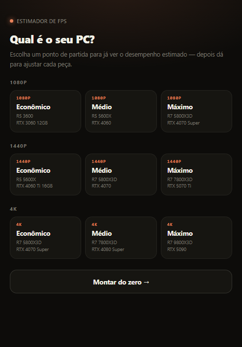
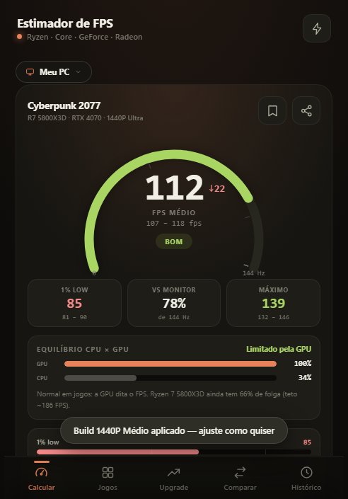
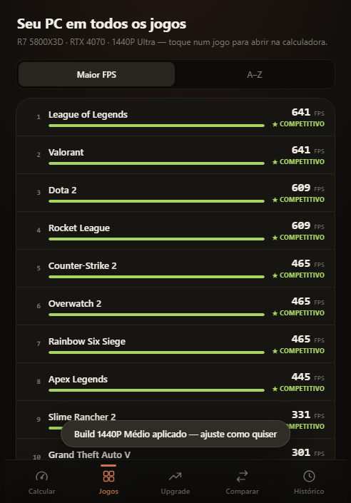
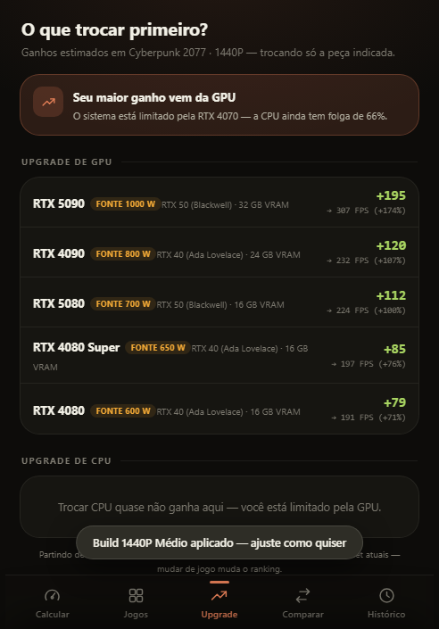

Estimador de FPS para PC gamer · Android
Escolha a CPU e a GPU do seu PC e veja quanto FPS ele deve entregar em cada jogo — na sua resolução, no seu preset gráfico, com ou sem Ray Tracing, Frame Generation e upscaling. O cálculo roda inteiro no seu aparelho, sem cadastro e sem anúncios.




Os números são estimativas de referência, não benchmarks. O desempenho real varia conforme o jogo, os drivers, a memória e a configuração específica de cada PC. Use como apoio na hora de montar ou planejar um upgrade.
O app não coleta nada e não pede permissão de localização, contatos, câmera ou arquivos. Ele acessa a internet só para baixar o catálogo público de peças, jogos e preços — nada seu é enviado, e o app funciona inteiro sem conexão. Detalhes na Política de Privacidade (English version).
Encontrou um erro nos números, quer sugerir um jogo ou uma peça de hardware? Escreva para SEU-EMAIL@exemplo.com ou abra uma issue no GitHub.